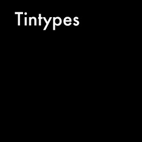
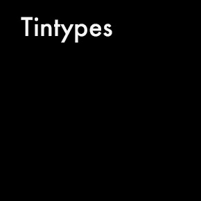

July 2016
Skills used: Illustrator
ZhishiQ is a website that connects Chinese college students who are studying abroad with English speaking advisors. They provide them with assistance with college applications, proofreading, editing and a number of other services. In this project, I designed a mockup for the UI of their home page to be submitted as a potential final design.
At first, it was important to do a lot of research on the client. I read and re-read the design brief and carefully examined the existing website that the client wanted to re-do. The client also provided a simple wireframe that provided a general idea of the content that they wanted on the home page. They also provided a logo and color scheme. Once I chewed on all this information, I began making my own version of the client's wireframe to help better understand everything I would need to include.
I began with a header, body, and footer. I began tackling the header and footer first, because I wanted to get all the content laid out before thinking about design. At the top, below the header, I thought it would be interesting and eye-catching to include a video explaining the site. For the body, I knew I wanted three sections: Services, Advisors, and Customer Reviews. I started outlining my vision, playing with color and font sizes next.
The most difficult part was designing the icons for the services portion. In my first iteration of the mockup, I had some simple icons, but they lacked consistency. The second time around, I took more time to sit down and sketch my ideas before putting them in Illustrator. This helped keep the icons consistent, with balanced positive and negative space and similar complexities. I also discovered in my first iteration that the font sizes lacked a clear hierarchy, so I organized those the second time around.
My mistake in the first iteration was that I did not sketch my logos out by hand before designing them in Illustrator. Through this project, I learned that sketching is a crucial part in the design process. Too often I skip this step because I think I have a clear idea ahead of time, but disciplining myself to take time has been one of my main goals as a designer. Careful planning is easy to overlook in the excitement of the design process with inspiration, but it saves you a lot of time in the long run and makes your designs smarter, more organized, and consistent.


 
